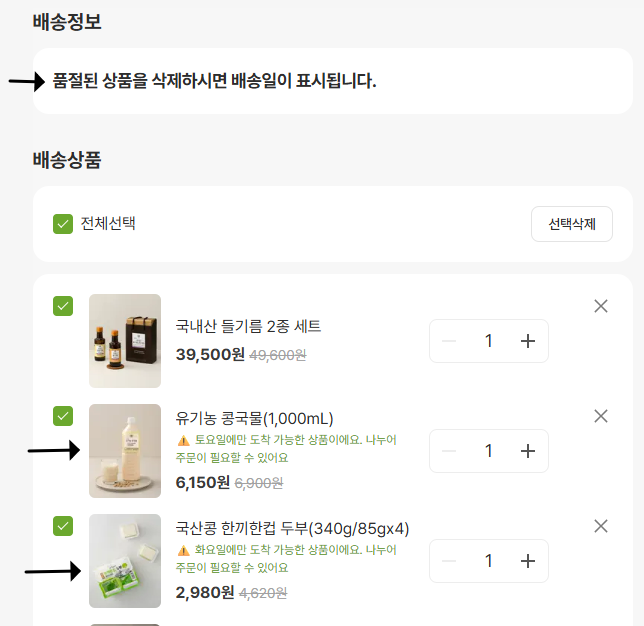
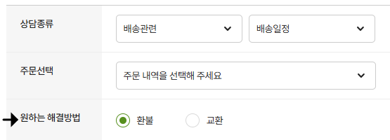
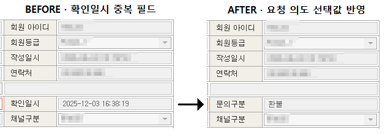

문의 한 건을 더 빠르게 처리하기보다 왜 같은 문제가 반복되는지부터 확인했습니다. VOC를 재현하고 원인을 나눈 뒤 제품, 정책, 자동화 중 문제 크기와 리스크에 맞는 수단을 선택해 실제 반영까지 연결해왔습니다.
반복 VOC를 재현하고 원인을 분리해 장바구니 안내와 고객 입력 구조 개선으로 연결했습니다.
데이터와 복수 신호를 근거로 제품 개선과 운영 정책의 경계를 판단하고 이상 주문을 기준에 따라 검토했습니다.
대량 예외의 우선순위를 다시 설계하고 정형 입력만 자동화해 반복 등록을 7→1단계로 줄였습니다.
복잡한 운영 이슈에서 판단·검수·에스컬레이션 기준을 정비하고 여러 유관부서와 외부 파트너 이슈를 정렬해 실행까지 연결했습니다.
각 사례를 누르면 판단 과정과 비식별 증빙을 확인할 수 있습니다.
반복 문의를 주문 불가 사유가 화면에 드러나지 않는 문제로 보고, 전체 로직 변경 대신 충돌 시점의 최소 안내로 범위를 좁혔습니다.
접수 단계의 고객 의도를 구조화하고 CRM에서 바로 확인되도록 연결해 재확인을 줄였습니다.
173건을 전수 분류해 82.1%의 주원인을 확인하고 문의 규모와 개발 복잡도를 비교했습니다.
재배송 1,151건과 취소 777건의 처리 순서를 재설계하고 자동화 후 필요한 지원 인력까지 재산정했습니다.
사진·재포장·보관·회수를 일률적으로 요구하던 기준을 다시 검토해 사진 대체 접수안을 도출했습니다.
주문자/수령자 불일치, 구매량, 반복 배송지, 공식 기준 충족 여부를 함께 확인해 이상 주문을 검토했습니다.
공동구매·명절처럼 예외가 집중되는 운영의 협조 범위와 판단·에스컬레이션 기준을 사전에 정리했습니다.
운영 판단·검수·에스컬레이션 기준을 정비하고 유관부서와 외부 파트너 협의를 맡아 복잡한 이슈를 실행까지 연결했습니다.
카카오VX에서 400여 제휴 골프장의 취소·위약·운영 조건을 공통 항목과 확인 순서로 구조화했습니다.
더 잘 처리하는 운영보다,문제가 덜 생기는 구조를 만드는 운영을 해왔습니다.
출고 가능 요일이 다른 상품을 함께 담으면 주문이 막혔지만 고객 화면에서 원인이 충분히 드러나지 않아 같은 문의가 반복됐습니다.
단순 안내 부족이 아니라 주문 불가 이유가 제품 화면에 드러나지 않는 문제로 보고 실제 조합을 재현했습니다.
전체 배송 로직을 바꾸기보다 충돌 순간에 제한 이유를 보여주는 최소 기능으로 범위를 좁혔습니다.

고객이 원하는 해결방법이 자유 입력에 섞여 있어 담당자가 다시 읽거나 추가 확인해야 했습니다.
담당자의 숙련도보다 접수 단계에서 필요한 정보가 구조화되지 않은 문제로 봤습니다.
1:1 문의에 ‘원하는 해결방법’ 선택값을 두고 해당 값이 CRM에서도 바로 확인되도록 연결했습니다.


173건을 전수 분류해 문구 미인지 142건(82.1%), 정책 기준 혼동 12건, 홀수 수량 알림 부재 19건으로 나눴습니다.
화면 전면 수정의 개발 복잡도와 문의 절대량을 비교해 즉시 개발보다 운영 정책으로 해결하는 편이 적절하다고 판단했습니다.
초회 예외와 재인입 종결 기준을 나눠 같은 상황에서 동일한 판단이 가능하도록 했습니다.
외부 물류 운영사 전환 직후 재배송 1,151건과 취소 777건이 동시에 발생했습니다.
재배송은 지연될수록 고객 영향이 커져 마감 시점과 영향도를 기준으로 먼저 배치했습니다.
규칙이 명확한 정형 필드는 Chrome Extension으로 자동화하고 귀책·금액·최종 제출은 담당자 판단으로 유지했습니다.
파손 사고 고객은 사진 3종과 구매내역을 다시 제출하고 상품을 재포장해 회수될 때까지 보관해야 했습니다.
사고 확인에 필요한 증빙과 파트너 내부 처리 절차가 구분되지 않은 채 고객에게 일률적으로 적용되고 있다고 판단했습니다.
사고 확인에 필요한 정보와 파트너의 사고 처리 책임을 구분해 증빙·회수 기준을 재협의하고 사진 대체 접수안을 도출했습니다.